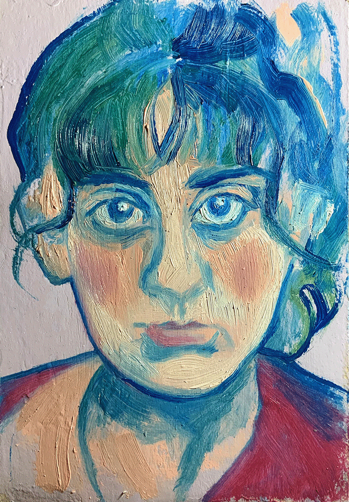

After 4 years studying Communication Design at FBAUP, Marta has found hidden between the covers of book a world she’s excited to dive in, interested to explore how to create captivating works in the field of editorial design.
For Marta, Design reflects her aim for perfection but a unexpected kind of perfection, far from the mathematical ideals achieved by computers and machines but a much more human version of it, a version of ancient almost mythological perfection, so imposing yet so human and full of little idiosyncrasies, often associated with her preferred techniques and practices like drawing, painting, printmaking, illustration and photography. Mixing and matching these practices she's able to create works that translate the almost lost art of authenticity honesty.
In this honesty Marta explores, in her original work, the reflection of her own memories (raging from special little details of her childhood to moments of a broken conversation she had just yesterday). Her work exposes her own experiences in such a way that those become universal to all of us.
Experience
Jan 2022
~ present
Freelance Graphic/
Editorial Designer
Jan 2024
Jul 2024
Curricular Internship
Ana Resende Studio
Abr 2022
May 2022
Editorial design of Viana de Lima Prize Catalogue
Education
Oct 2020
Jul 2024
Bachelor Communication Design Faculty of Fine Arts Porto
Oct 2017
Jul 2020
José Estevão High School Aveiro
Awards & Exhibitions
2024
CPLP Biennial Exhibition of Young Creators
2024
Artistic Residency within the scope of the CPLP Young Creators Biennial
2024
Exhibition of Finalists of the Communication Design Degree “Tá Fechado”
2024
Organizing committee of the “Tá Fechado” Communication Design Degree Finalist Exhibition
2023
“Mostra Nacional Jovens Criadores Gerador”, Youth Hostel of Vila do Conde
2023
Selection “Mostra Nacional Jovens Criadores Gerador”
2023
Group show “Intervalo - Antes E Depois, O Desenho”
Workshops
2024
Figma 101 Workshop — FBAUP Design Inc.
2023
Polypropylene Printmaking Workshop — Oficina Mescla
2022
Printmaking Workshop — Jacek Szewczyk and Christopher Nowicki — FBAUP
2021
Drawing and Construction Workshop — João Xará — GrETUA
2020
Character building workshop with Joana Afonso — XS design Xpress
Special Thanks